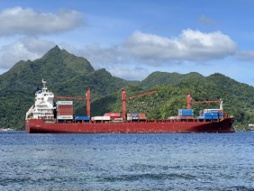
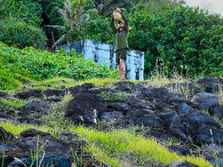
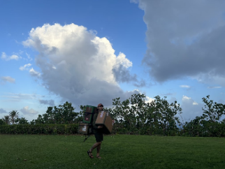
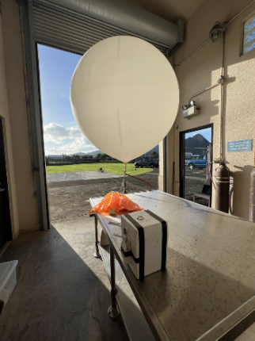
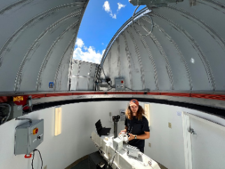

Longren Colorado Newsletter #03 - 08.02.2026
------------------------------
Hello friends and family,
Before diving into what's new in the Antarctic, I'd like to show you what I've been up to during the in between. Since October, I've been based back in Colorado. I returned to my previous job at NOAA, this time hired through the university in Boulder. After getting reoriented with the job, I flew down to American Samoa, a small island chain in the Pacific that is a territory of the United States. For three weeks, I took care of the atmospheric observatory located on the island of Tutuila.  A cargo ship entering Pago Pago harbor. Two big parts of the job at the observatory are taking air samples and launching balloons. The air samples are collected into glass and stainless steel flasks, each a few liters in size. These are then shipped back to Colorado, where the air is analyzed with bigger equipment than what we have at the observatory.  Taking an air sample that will be used to measure the amount of carbon dioxide in the atmosphere. These air samples are collected every week. Different types of flasks are used, as certain gases that we are trying to measure react with the flask itself. In order to measure many types of gases accurately, both steel and glass flasks must be used. On average, about four big boxes of flasks are sampled each week. A lot of time is spent at the post office both receiving new flasks and shipping out the sampled flasks.  Carrying sampled flasks back to the observatory. As for the balloons, they are used to measure the amount of ozone high up in the atmosphere, in the region called the stratosphere. While the oxygen we breath has two oxygen atoms (O2) bound together, ozone has three atoms (O3). We are especially interested in ozone, as it strongly absorbs harmful UV radiation from the Sun. Fun fact! If you were able to bring all of the ozone in the atmosphere down to us at the surface, it would form a layer just about five millimeters thick. That small amount of ozone is able to protect us from the worst of the cancer-causing sun rays.  An ozonesonde attached to a balloon and a parachute. The balloon reached 33 kilometers above the surface before popping. Balloons aren't the only way that we measure ozone in the atmosphere. A device called a Dobson spectrophotometer measures how much ozone there is between the Sun and the surface of the Earth. The Dobson measurement isn't able to tell us the distribution of ozone in the atmosphere like the balloon measurement can. Instead, the Dobson provides a single total ozone value that can be obtained multiple times per day, without using up a balloon. While the balloons provide us more information, they are usually launched only once per week.  Operating the Dobson to measure the amount of ozone in the atmosphere. Another fun fact! The Dobson is one of the longest-running instruments that measures a property of our Earth. Since it was invented in the 1920s, one of these instruments has been continuously measuring the ozone in Switzerland. That's all for what I've been up to again in American Samoa. Next up, I'll be writing all about the South Pole, Antarctica. I arrived to the Pole two weeks ago and have both learned and done a ton that I'm excited to share with you. More about the South Pole in the next one. Until then, Luke ------------------------------
------------------------------
Previous newsletters can be found on my website.
|